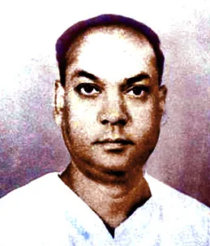

From Soil to the Sky : Canvas of Sachi Routray’s Poetry
Read in book
Poet Sachi Routray occupies an eminent transformative position in modern Odia poetry. His philosophy of poetry goes beyond aesthetic beauty and moves toward social realism, humanism, and revolutionary consciousness. A critical examination of his poetic thoughts reveals his rejection of purely romantic ideals and his commitment to poetry as a force for social awakening. When compared with his contemporary poets, his uniqueness and literary influence become more conspicuous.
Routray believed that poetry should not exist merely for artistic pleasure. He viewed poetry as a moral and social instrument that must reflect the realities of society. He shifted Odia poetry from romantic imagination to social realism. His poetry gave voice to marginalized communities such as peasants, workers, and oppressed classes. He expanded the role of poetry from personal emotion to collective consciousness. However, some critics argue that his strong social commitment occasionally overshadowed lyrical subtlety. His poems sometimes become direct and rhetorical rather than symbolic or layered. Nonetheless he gave Odia poetry a fresh air and connected it with the global community.
As a progressive poet with a Marxist philosophy Routray’s poetry emphasizes human dignity and resistance against injustice. His philosophy presents human beings as agents of transformation rather than passive sufferers.
His poems celebrate sacrifice, courage, and ethical responsibility.
He blends patriotism with universal human values.His humanism is action-oriented rather than abstract or purely philosophical. Yet, critics suggest that his revolutionary zeal sometimes simplifies complex human emotions into ideological expressions. But no one can deny that his poetry was not slogan oriented public rhetoric but aesthetically rich and powerful.
He was responsible for integrating folk sensibility and modern thought in poetry.
Routray’s poetic philosophy integrates rural experiences, folk imagery, and modern progressive ideas. He successfully preserved local cultural identity. His use of simple and direct language made poetry accessible to common readers. He almost democratised literature by reducing elitist literary expressions and brought it nearer to the common readers. Some literary scholars note that simplicity in language occasionally reduces interpretative complexity, making certain poems less open to multiple philosophical readings. Obviously, he created a new idiom of modern poetry in Odia,
His poetry was symbolism rooted in reality. He used natural symbols such as soil, river, and sky to express philosophical truths. His symbolism is grounded in everyday life rather than abstract metaphysics. His symbols connect individual experiences with universal existence.
His poetry balances emotional intensity with ideological clarity.
However, few critics sometimes find his symbolism more functional than deeply layered compared to later modernist poets. However, he was respected for laying the foundation for the modern poetry which was distinct from his predecessors and the contemporary poets. For instance, Kalindi Charan Panigrahi, associated with the Sabuja literary movement, emphasized romanticism and emotional lyricism. Routray was quite different from his style of poetry and he expanded Odia poetry toward socio-political consciousness, whereas Panigrahi preserved aesthetic romantic tradition. Another of his contemporaries Godabarish Mohapatra was known for social reformist literature and nationalist thought.
Sachi Routray never subscribed to that style
although he was equally committed to the society. While both poets addressed social issues, Routray’s poetry is more emotionally charged and artistically dynamic. Another prominent voice of the time was Radhamohan Gadanayak who blended romantic imagination with cultural themes in a lyrical style.
While Routray’s poetry engages with present social realities, Gadanayak often explores cultural nostalgia and imaginative expression in his poetry.
A critical analysis of Routray’s philosophy shows that he had transformed Odia poetry into a socially responsive literary movement. He merged literary creativity with progressive activism. He balanced folk roots with modern intellectual thought. He expanded the philosophical scope of poetry from individual expression to societal transformation. His poetry represents a bridge between traditional literary heritage and modern progressive ideology.
The philosophy of poetry developed by Sachi Routray marks a turning point in modern Odia literature. His poetry rejects escapist romanticism and embraces social realism, human dignity, and revolutionary optimism. Compared with his contemporaries, Routray stands out for his emotional intensity, ideological clarity, and commitment to social transformation. While some critics point to occasional rhetorical excess, his contribution remains foundational in shaping progressive poetic consciousness in Odia poetry. His influence on the next generation of poets was profound and inspiring. He is therefore rightly credited with laying the foundation of modern Odia poetry in post independence era.